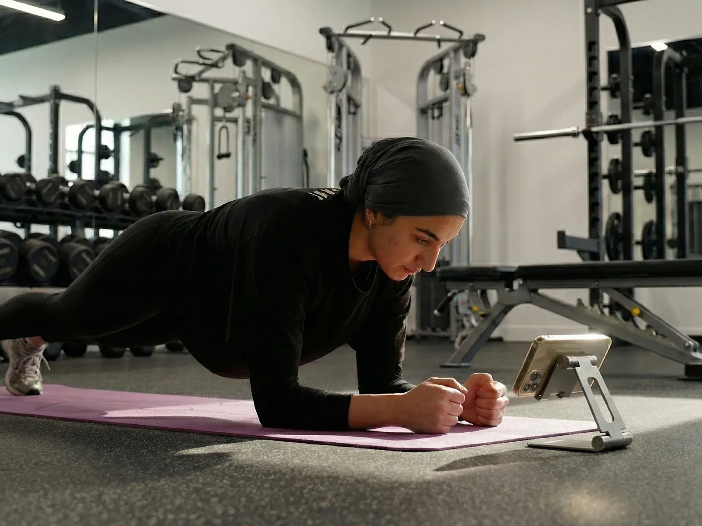
پروژه
۰۲ / ۰۹
TFIT
طراحی بصری دیجیتال
و تولید محتوای هوش مصنوعی
این پروژه به ۳ بخش تقسیم شده است
طراحی رابط کاربری (UI/UX) اپلیکیشن توسط تیم محصول تنزیب انجام شده است. سهم طراح در این پروژه شامل ویژوالهای گرافیکی، بنرها، آیکونها و تصاویر بصری است.
دستاوردها
- ویژوالهای دیجیتال اپلیکیشن (بنر، آیکون) —
- طراحی شبکههای اجتماعی (اینستاگرام، لینکدین، تلگرام) —
- غرفه و مواد نمایشگاهی فیتکس ۱۴۰۴ —
- محتوای بصری مبتنی بر هوش مصنوعی —
- هماهنگی بصری با تیم محصول و بازاریابی —
توضیح و رویکرد
تنزیب (Tanzib) برای اپلیکیشن تناسباندام TFIT به هویت بصری کامل و حضور فعال در شبکههای اجتماعی نیاز داشت. طراحی بصری اپلیکیشن، محتوای اینستاگرام و لینکدین، و غرفه نمایشگاهی فیتکس ۱۴۰۴ را از پایه ساختم؛ نتیجه، رشد ثابت نصب اپلیکیشن و بیشترین ثبتنام ماهانه تاریخ آن در ماه برگزاری نمایشگاه بود.
بخش ۰۱ از ۰۳
غرفه نمایشگاهی فیتکس ۱۴۰۴
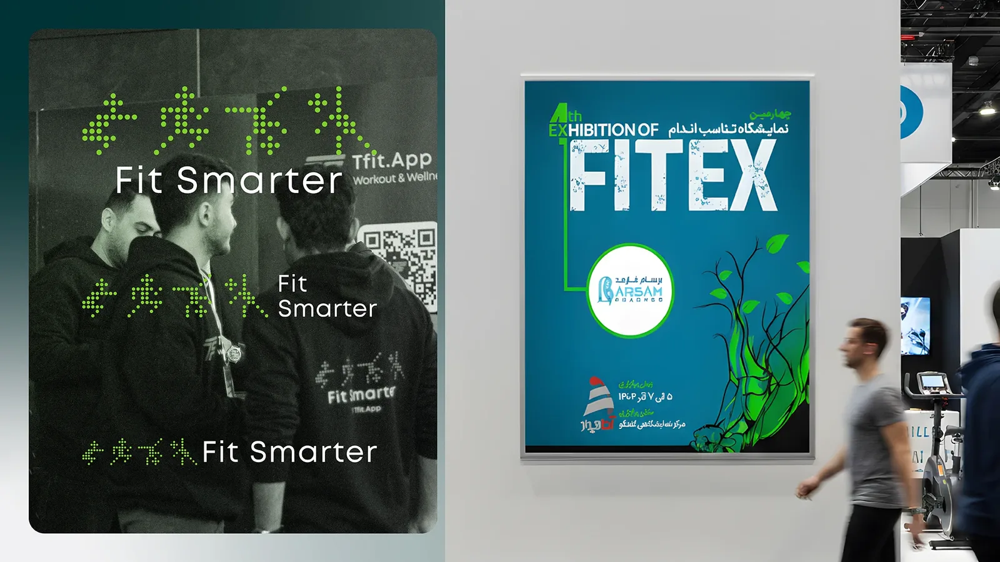
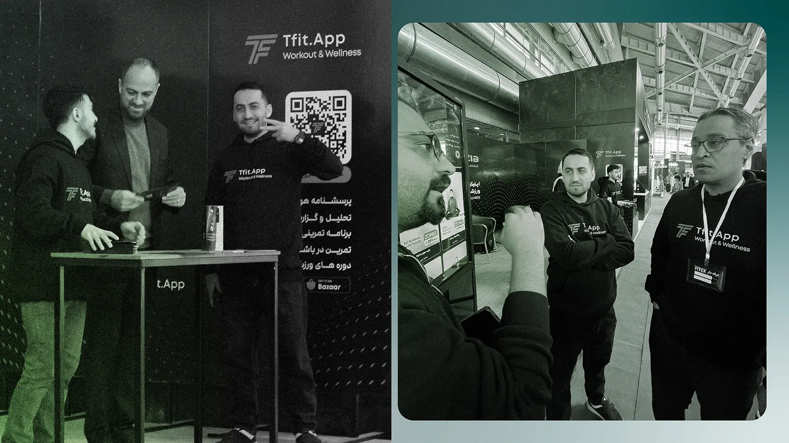
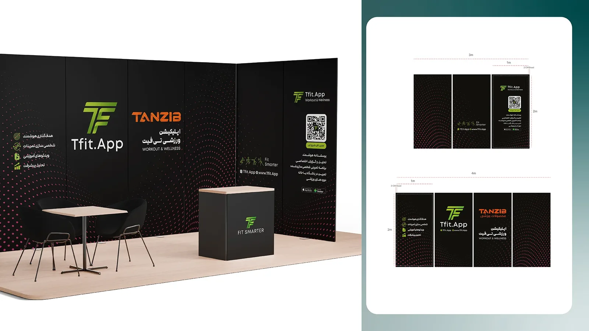
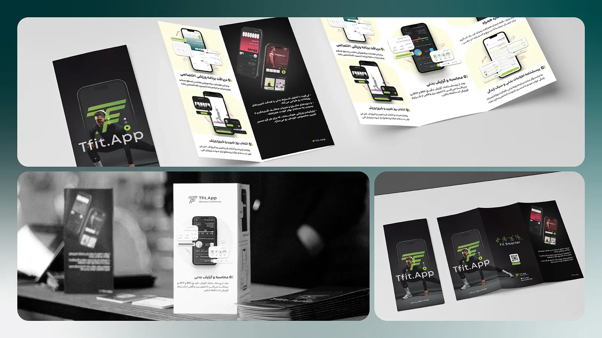
بخش ۰۲ از ۰۳
هویت بصری، اپلیکیشن و کافهبازار
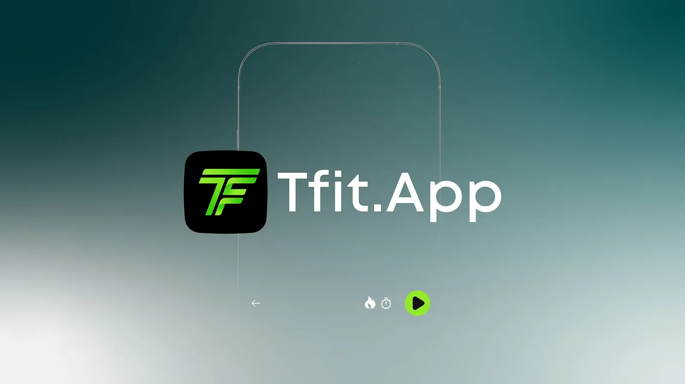
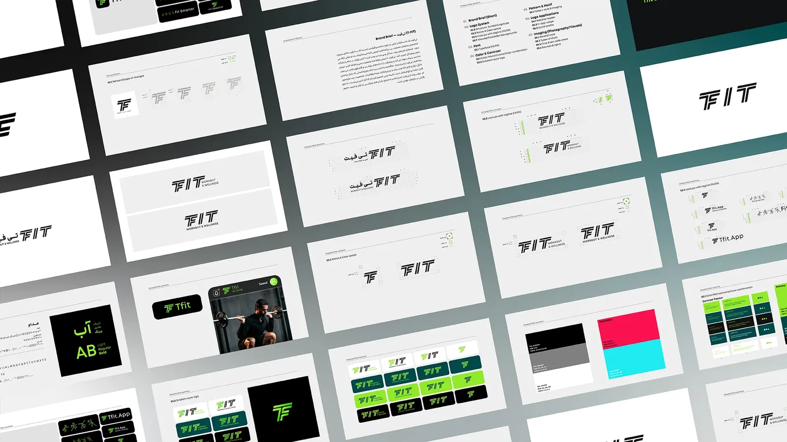
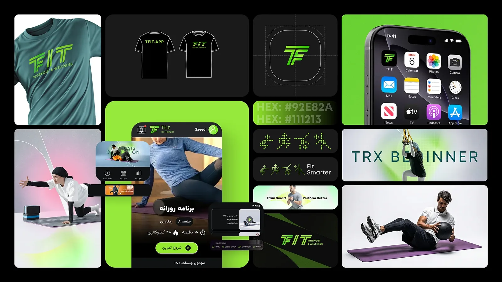
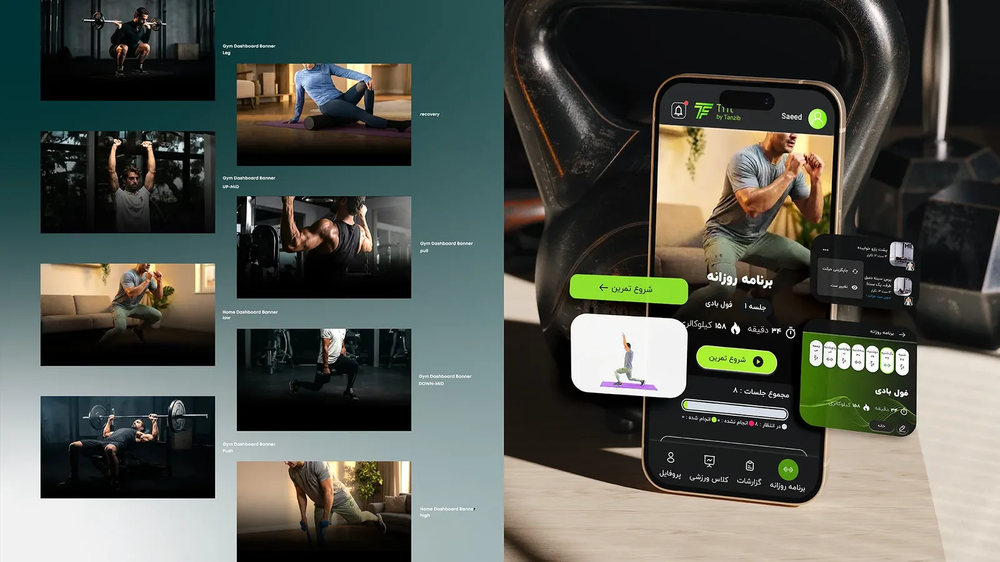
بخش ۰۳ از ۰۳
وب و شبکههای اجتماعی
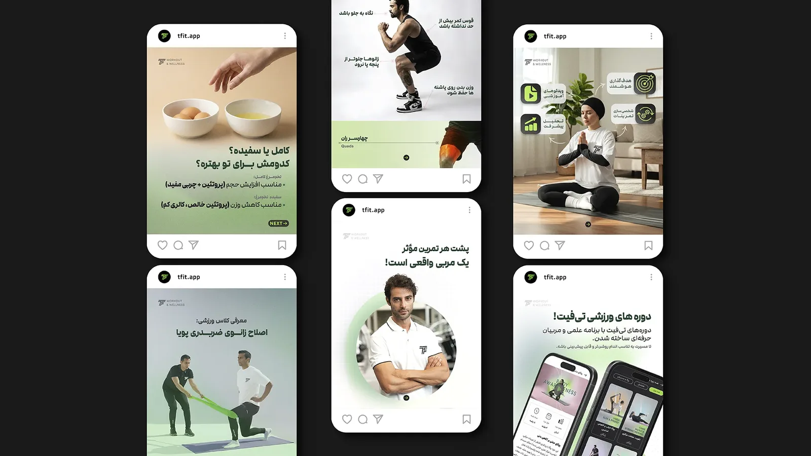
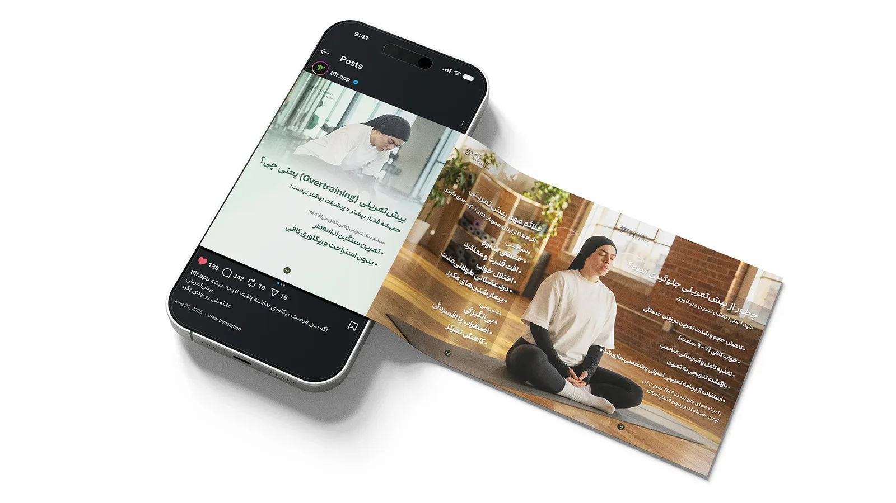
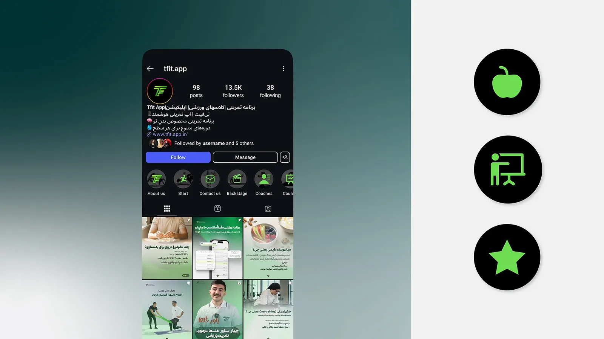